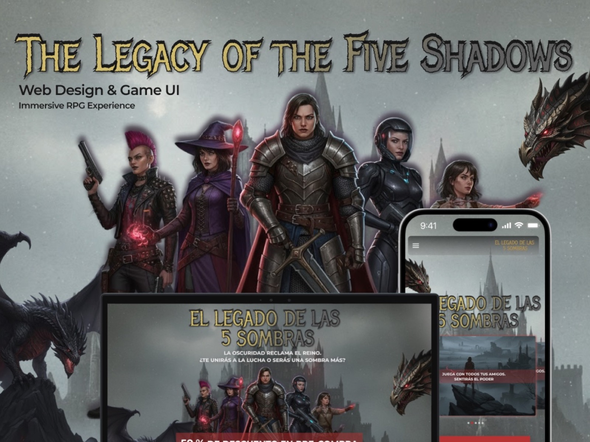
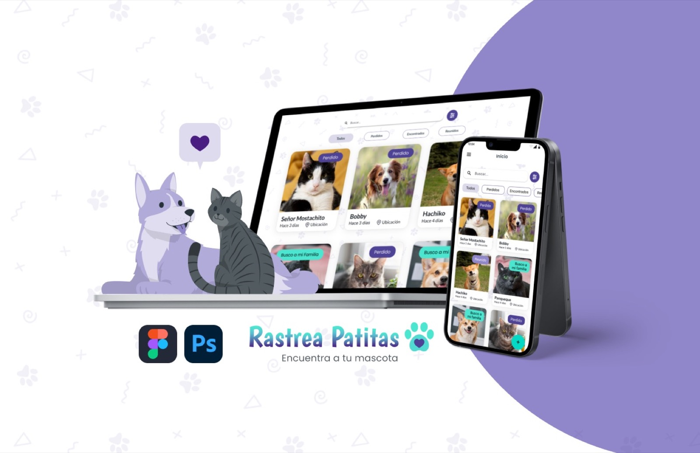
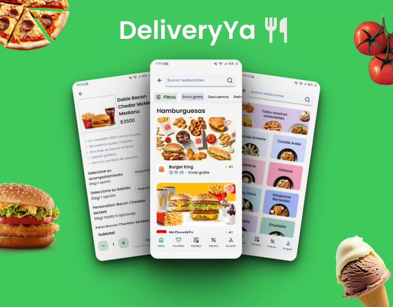
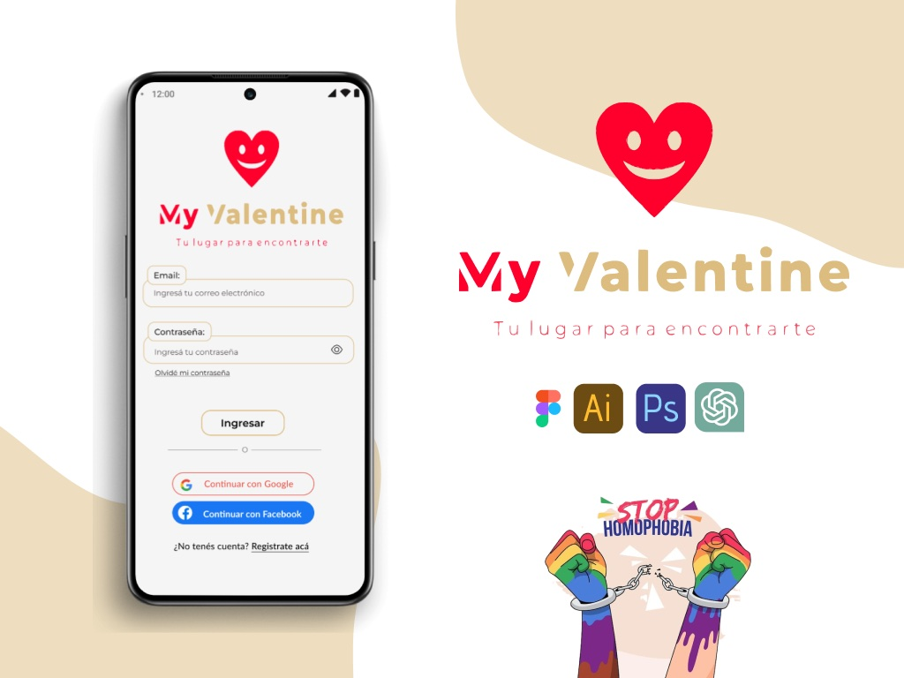

The Legacy of the Five Shadows
A dark fantasy RPG launch concept focused on conversion, responsive architecture, mobile accessibility and an immersive visual system.
Open case study →More work
A smaller archive for projects that show range: conversion, immersive storytelling, product launch strategy and visual systems outside the main selected work.

A dark fantasy RPG launch concept focused on conversion, responsive architecture, mobile accessibility and an immersive visual system.
Open case study →
A responsive platform concept for reporting lost pets, creating alerts and helping owners reconnect through QR codes, posters and community-driven search.
Open case study →
A mobile food delivery concept focused on restaurant discovery, browsing, filters, item customization and a clear ordering flow.
Open case study →
A dating app concept exploring safer digital connection, privacy concerns, onboarding, user flows and a warm mobile visual system.
Open case study →